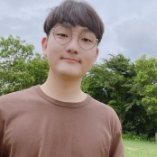

Graduate Student in Computer Science
Jaegun Lee
M.S./Ph.D. integrated student at POSTECH, working on geometric algorithms with a focus on covering and partition problems.
About
I am a graduate student in the Department of Computer Science and Engineering at Pohang University of Science and Technology (POSTECH). My work centers on geometric algorithms, especially covering and partition problems. Recently, I have been studying strip-based covering and classification problems, color-spanning structures, and triangulation-related questions.
Research Interests
- Partitioning and Covering
- Bichromatic and color-spanning geometric optimization
- Optimization of NP-hard problems
Education
Pohang University of Science and Technology
M.S./Ph.D. (Integrated) in Computer Science and Engineering, 2022 – present
Advisor: Hee-Kap Ahn · GPA: 4.04/4.3
Pohang University of Science and Technology
B.S. in Creative IT Engineering & Mathematics, 2017 – 2022
GPA: 3.81/4.3 (Cum Laude)
Publications
Journal
Hwi Kim, Jaegun Lee, Hee-Kap Ahn · Theoretical Computer Science · 2024
Hwi Kim, Jaegun Lee, Hee-Kap Ahn · Computational Geometry · 2023
Conference
Bichromatic Classifications using Strips
Jaegun Lee, Chaeyoon Chung, Hee-Kap Ahn · SWAT 2026
CG#Hunters Approach to Central Triangulation Under Parallel Flip Operations
Jaegun Lee, Seokyun Kang, Hyeonseok Lee, Hyeyun Yang, Taehoon Ahn · SoCG 2026
Taehoon Ahn, Jaegun Lee, Byeonguk Kang, Hwi Kim · SoCG 2025
Jongmin Choi, Jaegun Lee, Hee-Kap Ahn · WADS 2023
Hwi Kim, Jaegun Lee, Hee-Kap Ahn · CCCG 2022
Talks
Bichromatic Classifications using Strips
The 17th Annual Meeting of Asian Association for Algorithms and Computation (AAAC 2026).
Monotone Partitions of Simple Polygons
The 16th Annual Meeting of Asian Association for Algorithms and Computation (AAAC 2025).
Efficient k-center algorithms for planar points in convex position
The 23rd Japan–Korea Joint Workshop on Algorithms and Computation (WAAC 2023).
Scholarships & Awards
Projects
Auto Nesting
By Samsung Heavy Industries · 2025–2026
Slab Yard Optimization
By POSCO DX · Team Leader · 2023–2024
Software Star Lab (Optimal Data Structure and Algorithmic Applications in Dynamic Geometric Environment)
2022–2025
Patents
Slab Transfer System Using Virtual Slab Yard Simulator
Korean Patent (Application), 10-2024-0201787 · 2024
Efficient Optimal Facility Location Determination Methods for Convex Position Demand Points
Korean Patent, 10-2704974 · 2024
Efficient Optimal Facility Location Determination Methods for Convex Position Demand Points
US Patent (Application), 18/496700 · 2023
METHOD AND APPARATUS FOR CLASSIFYING IMAGE
US Patent, 11657594 · 2023 / Korean Patent, 1021590520000 · 2020
Academic Activities
Conference Organization
- WAAC 2026
Official Reviewer of Journals
- CGTA · 2024
Official Reviewer of Conferences
- STACS · 2025
- WALCOM · 2025
- SoCG · 2024
- TAMC · 2024
- ISAAC · 2023
Educational Activities
- POSCO AI Expert · 2022
- Youth AI·Bigdata Academy · 2022.6, 2022.12, 2023, 2024.2, 2024.8, 2025.4
- HuStar Innovation Academy · 2022
- POSTECH CSED331 Algorithms TA · 2022, 2023
- Pohang Jecheol High School Advanced Thinking Program TA · 2022
Extra Activities
Lab Activities
- Algorithms Lab Manager · 2025–2026
Work Experience
- Polaris3D · Developer (Out-of-stock Detection Model, demo at CES 2020) · 2019–2020
Student & Club Activities
- Student Council of Department · 2018
- Adlib (drama club) · 2017–2022, President in 2019
- Tachyons (baseball club) · 2017–present
Contact
Email: jagunlee@postech.ac.kr
Affiliation: Department of Computer Science and Engineering, POSTECH